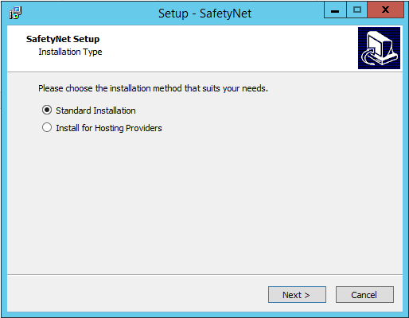
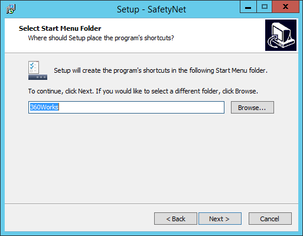
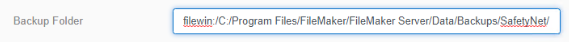
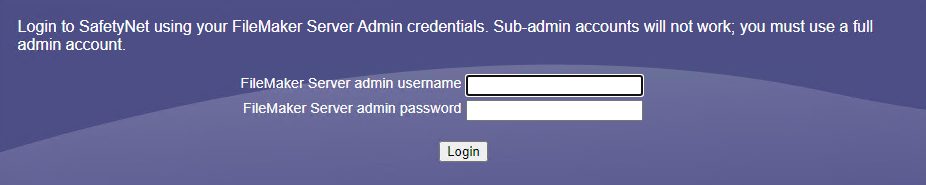
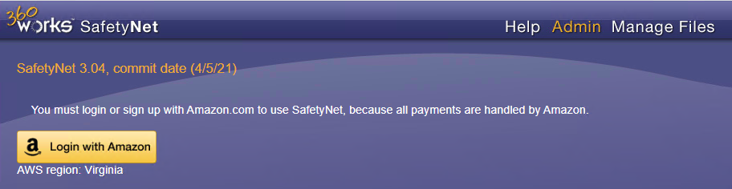
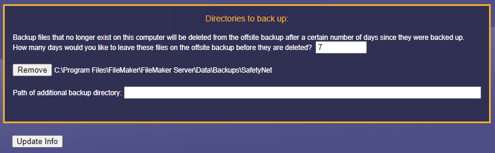
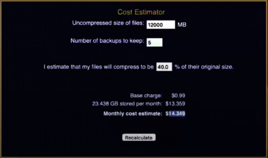

Set up 360 Works SafetyNet
SafetyNet is a low cost FileMaker offsite backup solution. Now you can rest easy, knowing that your essential FileMaker databases are backed up online with secure and easy retrieval at any time.
Before You Begin...
These steps are very important to keep your FrameReady in good, working order.
If you must use a third-party backup solution...
-
then you must also exclude the FrameReady folder from all backups it makes. Failing to do so will likely result in damaged database files, lost or conflicting data.
If you are using Time Machine on your Mac...
-
then you must exclude the FrameReady folder from all backups it makes. Failing to do so will likely result in damaged database files, lost or conflicting data.
If you are using Anti-Virus software on your computer...
-
then you must also exclude the FrameReady folder from its scanning activity. Failing to do so will likely result in damaged database files, lost or conflicting data.
In conclusion...
-
Use the built-in backup feature in the FileMaker Server Admin Console to backup the FrameReady folder.
-
Do not allow other backup software to backup the live FrameReady folder.
-
360 Works SafetyNet does not backup the LIVE database folder (as this would be dangerous). Instead, SafetyNet monitors and copies to the Amazon cloud the files in the Backups folder.
What is 360 Works SafetyNet?
-
SafetyNet monitors your FileMaker Server Backups folder every few minutes and writes an offsite backup whenever one is needed to Amazon’s cloud-based file storage for better security.
-
SafetyNet does not backup the LIVE database folder (as this would be dangerous). Instead, SafetyNet monitors and copies to the Amazon cloud the files in the Backups folder.
-
Once installed as a plugin on a FileMaker Server, SafetyNet watches for changes to the scheduled backup sets. When new files are detected, SafetyNet automatically compresses and transfers the latest backups to Amazon’s secure offsite digital storage facilities using SSL encryption.
-
SafetyNet also provides a web-based, single-click interface for easily restoring an offsite backup onto your FileMaker Server: This process will automatically close the hosted database, archive it (you can always access the archive later if you need it), download the offsite backup into the live database folder, and then open the backup database so it becomes the new live database.
SafetyNet Features
-
Runs every 5 minutes, and does a comparison locally on the server.
-
Uses your own personal Amazon account (do not use a business account as it may affect multiple computers) for billing.
-
For resistance to ransomware attacks, there is a minimum of a 3 (three) day backup window.
-
Runs as a background service with it's own web interface; is not a FileMaker plugin.
SafetyNet System Requirements
-
The SafetyNet plugin is designed to run on Mac and on Windows.
-
All system requirements are the same as those of FileMaker.
-
As long as you meet FileMaker's minimum requirements, you can run the plugin in your Mac or Windows environments.
Pricing
The SafetyNet plugin itself is free, but billing for the storage service is handled by Amazon at a surprisingly low cost (2021):
-
$0.99 base charge per month
-
$0.01 per 1,000 items written (rounded down)
-
$1.00 - $0.05 per gigabyte stored (per month):
-
First 10 gigabytes: $1.00 per gigabyte
-
Next 90 gigabytes, up to 100: $0.25 per gigabyte
-
Next 400 gigabytes, up to 500: $0.10 per gigabyte
-
All storage above 500 gigabytes: $0.05 per gigabyte
-
Example Pricing
-
Billing for the service is handled by Amazon.
-
5 gigabytes stored per month is $5.99
-
50 gigabytes stored per month is $20.99
-
250 gigabytes stored per month is $48.49
-
1,000 gigabytes stored per month is $98.49
For up-to-date pricing, see: https://www.360works.com/filemaker-offsite-backup/
There is no charge for data transfer in or out of S3.
How to Setup SafetyNet
Install SafetyNet
-
Download the SafetyNet installer from https://360works.com/filemaker-offsite-backup/
Tip: Keep these files! If you need to uninstall, then use the Mac Uninstaller.pkg or the Windows Uninstaller.exe -
Double-click the installer.
The Mac version unzips to a new folder, e.g. "SafetyNet 3.03" Open this folder and double-click Mac Installer.pkg -
Choose Standard Installation.

-
In the "Select Start Menu Folder," leave as default and choose Next.

-
Click Finish to close the setup wizard.
A SafetyNet web-based configuration page appears; we'll come back to this later.
Update Settings in the FileMaker Server Admin Console
-
Separately, open the FileMaker Server admin console and login with your credentials.
-
Create a new backup schedule as you normally would, but set the destination folder to the "SafetyNet" subfolder in the FileMaker Server's Backup folder.
Open the Backups tab. -
On the lower left, click Backup Schedules.
-
Click Create Schedule. and name it, e.g. SafetyNet Backup
-
Leave the Backup Type as "All Databases"
-
In the Backup Folder field, add SafetyNet/ (with the trailing slash) after the path.

-
Set the Number of Backups to Keep to 1
SafetyNet has it's own settings for the number of days (step 6 in the above) and this value will not affect it. -
Leave Verify and Clone unchecked.
-
Set Repeat to Daily
-
Click Save.
Setup SafetyNet
-
Go back to the SafetyNet web-based configuration page; the address is: http://localhost/SafetyNet
-
Click the Admin button.
Log in with your FileMaker Server Admin Console credentials.

-
Because all payments are handled by Amazon, you must login or sign up with Amazon.com to use SafetyNet.
Click the yellow Login with Amazon button.

-
Configure your credit card payments using your personal Amazon.com account and then click Store Payment Settings.
-
Optional: In the Notification Emails section, your Amazon account email will always receive notifications.
We recommend changing this setting to Just on backup failure to reduce the number of incoming emails that you receive.
You may optionally specific additional email addresses to receive notifications. Click Update Info after adding additinal email addresses. -
In the Directories to back up section, the default number of days is 7 (seven). The minimum retention period is 3 (three) days (max is 365) and is intended as a window for resistance to ransomware attacks.
After changing the number of days to leave files on the offsite backup before they are deleted, click the Update Info button.

-
You can use the Cost Estimator to calculate the expected storage costs for your FrameReady databases.
You can find the size of that backup folder by right-clicking a FrameReady backup folder and choosing Properites (Windows) or Get info (Mac).

Using and configuring SafetyNet
-
Open a web browser.
-
Go to this local address: http://localhost/SafetyNet
-
Login using the same username and password that you use to administer FileMaker Server.
-
You can remotely administer SafetyNet by substituting your server's IP address or name instead of 'localhost' (if your FileMaker Server is accessible from the outside world).
Where is default FileMaker Server Backups folder?
SafetyNet does not backup the LIVE database folder (as this would be dangerous). Instead, SafetyNet monitors and copies to the Amazon cloud the files in the Backups folder:
Default location of Backup folder in FileMaker Server
Windows: C:\Program Files\FileMaker\FileMaker Server\Data\Backups
mac OS: Macintosh HD/Library/FileMaker Server/Data/Backups
Canceling SafetyNet membership on Amazon
-
If you want to cancel the merchant agreement with SafetyNet, log in to your Amazon Pay account.
-
Once logged in, click Merchant Agreements.
-
On this page you should see a list of all merchant agreements that you have in your Amazon account. Look for "SafetyNet" in the list and click Details.
-
On the Details page, click the Cancel Your Agreement link.
-
A prompt to confirm the cancellation appears. Click Cancel agreement to confirm.
-
Once canceled, you are returned to the main account page and shown a message that you have successfully cancelled the agreement. The status should now show canceled in the merchant agreements section of the account and you should also receive a confirmation email.
How to Restore files using SafetyNet
-
You can either:
-
Download a copy of the files and then manually do whatever you want with them, or
-
SafetyNet can archive the live files in a timestamped archive folder in the FMS data folder and then replace them with whatever SafetyNet backup you pick. It uses fmsadmin.exe to automate the process of closing, moving, and opening the files. It’s a simple restore process, and you’ll never lose the previous production files unless you manually delete the timestamped folder from the archive.
-
Important Notes
-
Technically, SafetyNet is not a FileMaker Pro plugin but rather a background service with a web interface.
-
SafetyNet creates a new "SafetyNet" subfolder in the FileMaker Server's Backup folder, e.g. C:\Program Files\FileMaker\FileMaker Server\Data\Backups\SafetyNet and any files placed inside are backed up.
-
5GB files are compressed, on average, to 3GB.
-
Minimum of 3 (three) days data retention window for resistance to ransomware attack; WORM (Write-Once, Read-Many) locking prevents against ransomware and accidental or malicious deletions.
-
The number of backups in FMS to keep is not the same as for SafetyNet, so set FMS to 1 backup daily. That daily backup will be automatically handled by SafetyNet and be backed up to AWS.
-
SafetyNet runs every 5 (five) minutes and does a comparison locally on the server and is very smart to avoid backing up files that are mid-backup.
-
You can specify one or more additional email addresses for backup notifications (in addition to your Amazon account email address).
-
Off-site location backups on Amazon’s cloud-based file storage for better security.
-
SafetyNet locates the closest AWS backup region for faster backups.
-
If you logout from Amazon in the SafetyNet settings, then SafetyNet won't perform any backups.
-
Restore and host backup with a single click.
-
Unlimited storage, never run out of disk space.
-
SafetyNet provides a web-based, single-click interface for easily restoring an offsite backup onto your FileMaker Server. This process will automatically close the hosted database, archive it (you can always access the archive later if you need it), download the offsite backup into the live database folder, and then open the backup database so it becomes the new live database.
© 2023 Adatasol, Inc.